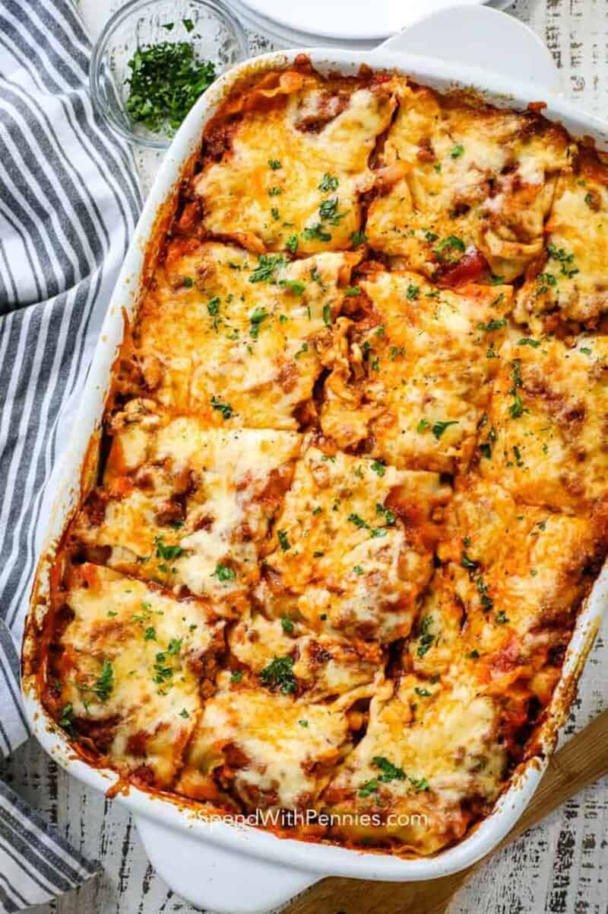

Lasagna

Description
Homemade lasagna may have a few steps, but each step is easy – and I assure you it’s worth the time; the perfect Italian meal!
The best lasagna recipe is made with ingredients that you know, and it’s not difficult at all! All you’ll need for this easy lasagna recipe is one pan, one bowl, and a 9×13 baking dish!
Ingredients
- Lasagna noodles
- 4 cups mozzarella cheese
- 1/2 cup paremesan cheese
- 1/2 pound lean ground beef
- 1 onion diced
- 2 gloves garlic minced
- 36 ounce of pasta sauce
- 2 tablespoons tomato paste
- 1 teaspoon italian seasoning
- Preheat the oven to 350°F. In a large pot of salted water, boil lasagna noodles until al dente according to package directions. Drain, rinse under cold water, and set aside.
- In a large skillet or dutch oven, brown beef, sausage, onion, and garlic over medium-high heat until no pink remains. Drain any fat.
- Stir in the pasta sauce, tomato paste, Italian seasoning, ½ teaspoon of salt, and ¼ teaspoon of black pepper. Simmer uncovered over medium heat for 5 minutes or until thickened.
- In a separate bowl, combine 1 ½ cups mozzarella, ¼ cup parmesan cheese, ricotta, parsley, egg, and ¼ teaspoon salt.
- Spread 1 cup of the meat sauce in a 9×13 pan or casserole dish. Top it with 3 lasagna noodles. Layer with ⅓ of the ricotta cheese mixture and 1 cup of meat sauce. Repeat twice more. Finish with 3 noodles topped with remaining sauce.
- Cover with foil and bake for 45 minutes.
- Remove the foil and sprinkle with the remaining 2 ½ cups mozzarella cheese and ¼ cup parmesan cheese. Bake for an additional 15 minutes or until browned and bubbly. Broil for 2-3 minutes if desired.
- Rest for at least 15 minutes before cutting.